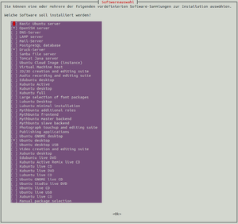

tasksel
Dieser Artikel wurde für die folgenden Ubuntu-Versionen getestet:
Ubuntu 14.04 Trusty Tahr
Zum Verständnis dieses Artikels sind folgende Seiten hilfreich:
 tasksel steht für "task select", auf Deutsch „Aufgabe auswählen“. Mit Hilfe des gleichnamigen Pakets und Programms kann man schnell und einfach alle Pakete und Programme, welche für einen bestimmte Aufgabe notwendig sind (z.B. Mailserver, OpenSSH-Server oder eine komplette Desktopumgebung), installieren. Bei der Servervariante von Ubuntu kommt tasksel bereits während der Installation zum Einsatz. Bei den Desktop-Varianten wurde es früher eingesetzt, heute gibt es für die meisten Aufgaben passende Metapakete.
tasksel steht für "task select", auf Deutsch „Aufgabe auswählen“. Mit Hilfe des gleichnamigen Pakets und Programms kann man schnell und einfach alle Pakete und Programme, welche für einen bestimmte Aufgabe notwendig sind (z.B. Mailserver, OpenSSH-Server oder eine komplette Desktopumgebung), installieren. Bei der Servervariante von Ubuntu kommt tasksel bereits während der Installation zum Einsatz. Bei den Desktop-Varianten wurde es früher eingesetzt, heute gibt es für die meisten Aufgaben passende Metapakete.
tasksel kann für einzelne Tasks spezielle Vor- und Nachbereitungen durchführen, die alleine mit der Paketverwaltung nicht möglich sind. Das Programm stellt dabei eine Vereinfachung dar, um bei komplexeren Aufgaben (z.B. LAMP-Server, Mail-Server) alle notwendigen Pakete "in einem Rutsch" in der richtigen Reihenfolge zu installieren.
Installation¶
Das Programm lässt sich über die offiziellen Paketquellen installieren[1]:
tasksel
 mit apturl
mit apturl
Paketliste zum Kopieren:
sudo apt-get install tasksel
sudo aptitude install tasksel
Benutzung¶
|  |
| tasksel unter Ubuntu 14.04 |
tasksel besitzt eine einfache, textbasierte Oberfläche, kann aber auch direkt auf der Kommandozeile genutzt werden. Die allgemeine Syntax lautet[2]:
tasksel BEFEHL OPTION TASK
Wobei hier entweder ein Befehl oder eine Option angegeben wird. Wenn Pakete installiert bzw. deinstalliert werden sollen, muss tasksel mit Root-Rechten[3] aufgerufen werden. Möchte man nur Informationen zu den Aufgaben anzeigen lassen, kann das Programm mit normalen Nutzerrechten laufen.
Das Programm kennt u.a. die folgenden Befehle und Optionen:
| Befehle und Optionen | |
| Befehl | Beschreibung |
install TASK | installiert alle Pakete, die für die Aufgabe TASK notwendig sind |
remove TASK | entfernt alle Pakete, die zur Aufgabe TASK gehören |
--list-tasks | listet alle Aufgaben ("Tasks") auf, die sich mittels tasksel installieren lassen |
--task-desc TASK | zeigt eine Kurzbeschreibung der Aufgabe TASK an |
--task-packages TASK | zeigt alle Pakete an, die zur Aufgabe TASK gehören |
tasksel kennt noch ein paar mehr Optionen. Diese sind in der Man-Page beschrieben.
Der Aufruf des Befehls:
sudo tasksel
startet eine einfache Oberfläche (siehe Abbildung). Diese wird mit den Tasten ↑ , ↓ , (zum An/Abwählen), Tab ⇆ und ⏎ gesteuert. Hier können ein oder mehrere Aufgaben ausgewählt werden und direkt installiert werden.
Beispiele¶
Informationen zu den verschiedenen Aufgaben bekommt man im Terminal.
Anzeigen aller Aufgaben, die tasksel kennt:
tasksel --list-tasks
Ausgabe:
u server Basic Ubuntu server u openssh-server OpenSSH server u dns-server DNS server u lamp-server LAMP server u mail-server Mail server u postgresql-server PostgreSQL database i print-server Print server u samba-server Samba file server u tomcat-server Tomcat Java server u cloud-image Ubuntu Cloud Image (instance) u virt-host Virtual Machine host u ubuntustudio-graphics 2D/3D creation and editing suite u ubuntustudio-recording Audio recording and editing suite u edubuntu-desktop-kde Edubuntu KDE desktop (unsupported) u edubuntu-desktop-gnome Edubuntu desktop u kubuntu-active Kubuntu Active u kubuntu-desktop Kubuntu desktop ...
Wenn in der ersten Spalte ein
iauftaucht, ist der entsprechende Task bereits installiert.Informationen zur Aufgabe "Mail-Server" anzeigen:
tasksel --task-desc mail-server
Ausgabe:
Dieser Task wählt Pakete aus, die für einen universellen Mail-Server nützlich sind.
Der folgende Befehl zeigt an, welche Pakete für die Aufgabe "Mail-Server" installiert würden:
tasksel --task-packages mail-server
Ausgabe:
dovecot-imapd python2.7 python procmail python2.7-minimal dovecot-core python-minimal libtokyocabinet9 postfix libpth20 libgpgme11 mutt ssl-cert bsd-mailx dovecot-pop3d
Einen LAMP-Server installieren:
sudo tasksel install lamp-server
Links¶
tasksel im englischen Ubuntu-Wiki
Should I use tasksel, tasks in APT or install regular metapackages?

- Erstellt mit Inyoka
-
 2004 – 2017 ubuntuusers.de • Einige Rechte vorbehalten
2004 – 2017 ubuntuusers.de • Einige Rechte vorbehalten
Lizenz • Kontakt • Datenschutz • Impressum • Serverstatus -
Serverhousing gespendet von